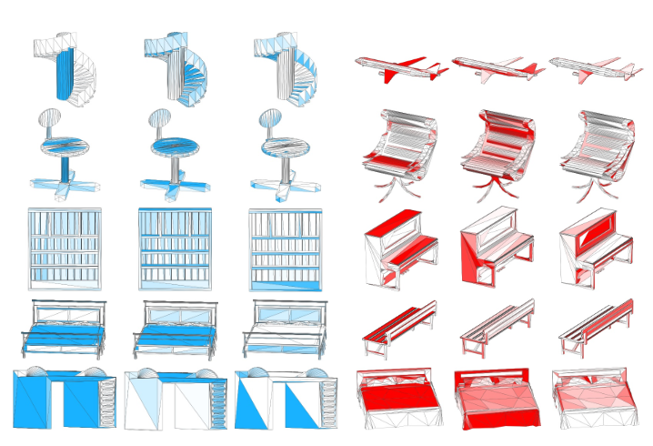
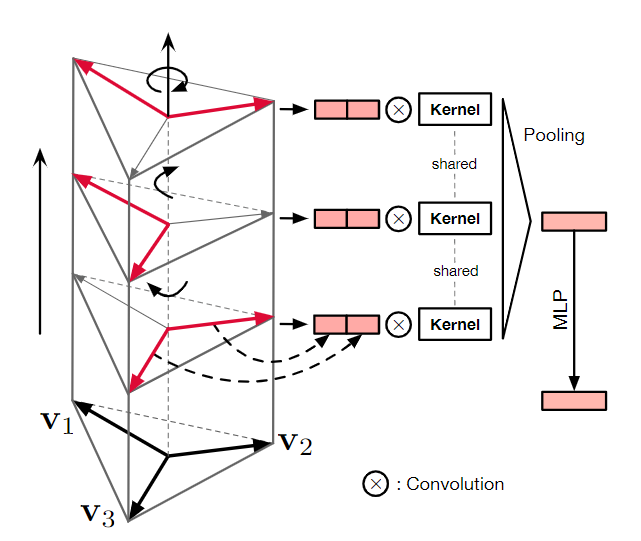
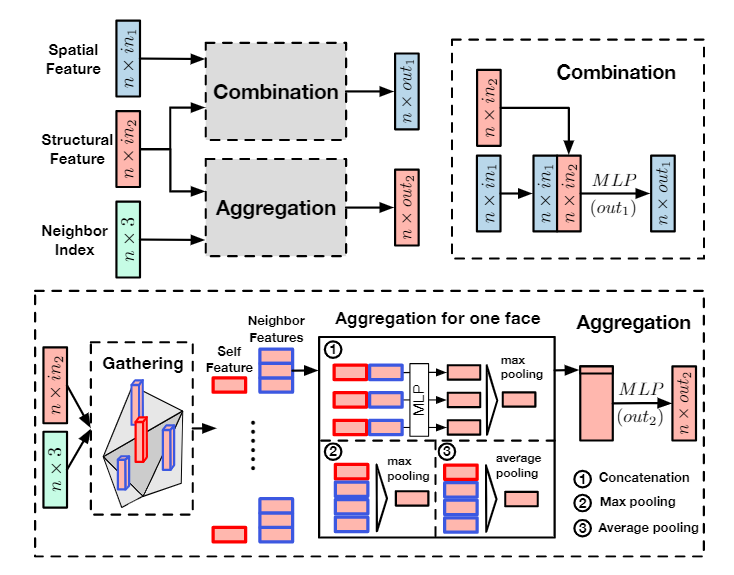

MeshNet: Mesh Neural Network for 3D Shape Representation
Yutong Feng, Yifan Feng, Haoxuan You
Mesh is an important and powerful type of data for 3D shapesand widely studied in the field of computer vision and com-puter graphics. Regarding the task of 3D shape representa-tion, there have been extensive research efforts concentratingon how to represent 3D shapes well using volumetric grid,multi-view and point cloud. However, there is little effort onusing mesh data in recent years, due to the complexity andirregularity of mesh data. In this paper, we propose a meshneural network, named MeshNet, to learn 3D shape represen-tation from mesh data. In this method, face-unit and featuresplitting are introduced, and a general architecture with avail-able and effective blocks are proposed. In this way, MeshNetis able to solve the complexity and irregularity problem ofmesh and conduct 3D shape representation well. We have ap-plied the proposed MeshNet method in the applications of 3Dshape classification and retrieval. Experimental results andcomparisons with the state-of-the-art methods demonstratethat the proposed MeshNet can achieve satisfying 3D shapeclassification and retrieval performance, which indicates theeffectiveness of the proposed method on 3D shape represen-tation.

Fig 1. The architecture of MeshNet.The input is a list of faces with initial values, which are fed into the spatial andstructural descriptors to generate initial spatial and structural features. The features are then aggregated with neighboring in-formation in the mesh convolution blocks labeled as “Mesh Conv”, and fed into a pooling function to output the global featureused for further tasks.
Feature of triangular faces

Fig 2. Feature visualization of structural feature.Models from the same column are colored with their val-ues of the same channel in features.Left: Features from theface rotate convolution.Right: Features from the face kernelcorrelation.
To figure out whether the structural descriptors successfullycapture our features of faces as expected, we visualize thetwo types of structural features from face rotate convolu-tion and face kernel correlation. We randomly choose sev-eral channels of these features, and for each channel, wepaint faces with colors of different depth corresponding totheir values in this channel.
Method
The overall archi-tecture of MeshNet is illustrated in Fig 1. A list of faces withinitial values is fed into two blocks, namedspatial descrip-torandstructural descriptor, to generate the initial spatialand structural features of faces. The features are then passedthrough somemesh convolutionblocks to aggregate neigh-boring information, which get features of two types as inputand output new features of them. It is noted that all the pro-cesses above work on each face respectively and share thesame parameters. After these processes, a pooling functionis applied to features of all faces for generating global fea-ture, which is used for further tasks. The above blocks willbe discussed in following sections.

Fig 3. The face rotate convolution block. Kernels rotatethrough the face and are applied to pairs of corner vectors forthe convolution operation.
The face rotate convolution block is proposed to captures the “inner”structure of faces and focus on the shape information of faces. This process is similar to a convolution operation, with two vectors as the kernel size, one vector as the stride, except that translation of kernelsis replaced by rotation. The kernels rotates through the face and works on two vectors each time.

Fig 4. The mesh convolution.“Combination” donatesthe combination of spatial and structural feature. “Aggrega-tion” denotes the aggregation of structural feature, in which“Gathering” denotes the process of getting neighbors’ fea-tures and “Aggregation for one face” denotes different meth-ods of aggregating features.
The mesh convolution block is designed to expand the re-ceptive field of faces, which denotes the number of facesperceived by each face, by aggregating information of neigh-boring faces. In this process, features related to spatial po-sitions should not be included directly because we focus onfaces in a local area and should not be influenced by wherethe area locates. In the 2D convolutional neural network,both the convolution and pooling operations do not intro-duce any positional information directly while aggregatingwith neighboring pixels’ features. Since we have taken outthe structural feature that is irrelevant to positions, we onlyaggregate them in this block.
Citation (BibTeX)
title={MeshNet: mesh neural network for 3D shape representation},
author={Feng, Yutong and Feng, Yifan and You, Haoxuan and Zhao, Xibin and Gao, Yue},
booktitle={Proceedings of the AAAI Conference on Artificial Intelligence},
volume={33},
pages={8279--8286},
year={2019}
}